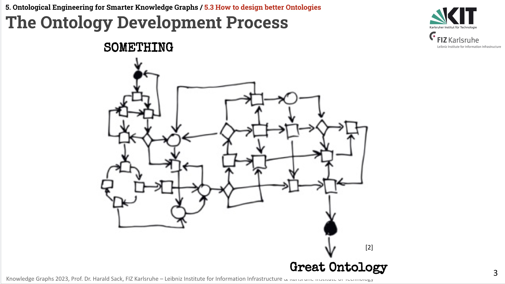
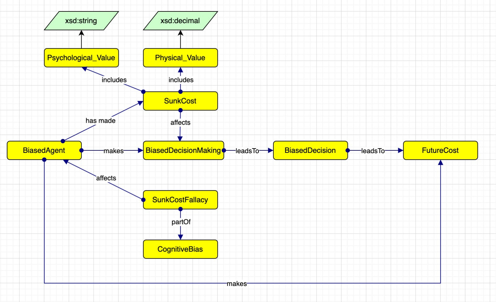
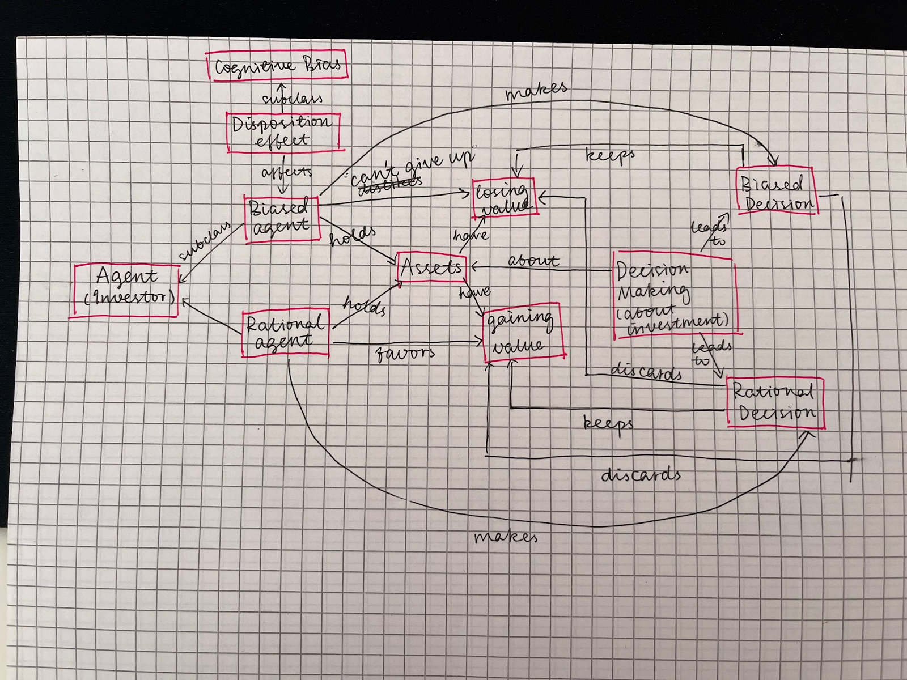

Context and literature state-of-the-art
According to the Extreme Design Methodology (XD), the first step of the entire design workflow is to enter the project context, even though in the context of our course project we do not have a real "customer" to satisfy. The only customers we want to satisfy and negotiate with are our brains, which lack cognitive science knowledge and find it counterintuitive to unpack these cognitive biases that might actually affect us. Reading and learning about our topics is intended to maximize the possibility of bridging these cognitive gaps.
Step 1. From Mindmap to Onlology
After having a basic understanding of our topics, we decided to start this counter-intuitive and overly abstract task for human beings in a more intuitive way, which is to visualize those ideas in our mind in the form of mindmaps manually, with paper and pen, or online UML tools like draw.io.
Drawing mindmaps helped us better understand the modeling of cognitive biases clearly, and also prevented us from totally being bought into Chat GPT’s generated information in the next step. Only after having a relatively clear idea about the possible models, did we start to inquire about suggestions from Chat GPT and then convert our naive mindmaps into formal ontologies based on our knowledge and the trained knowledge of LLM.
 Step 2. Flexible Dialogues with LLM
To get the highest quality of generated information possible, we purchased the upgrade of the GPT-4, especially considering its obvious excellence compared to the GPT-3.5 in multiple benchmarks and the more updated training data it obtained, which is as new as December of 2023.
At the beginning of our tentative conversations with GPT-4, we decided that all group members should retrieve information from it with the same set of prompts, to fulfill the alignments of group work and increase the repeatability of the information retrieval process. The initial prompts are designed as follows:
- Ask GPT-4 to generate 3 real-life situations where the cognitive bias happens to people;
- Pick the most representative example from the 3 cases above, and ask GPT-4 to describe it in detail;
- Ask GPT-4 to grasp the most important elements from the detailed user case;
- Based on previous discussions, ask GPT-4 to model the cognitive bias in the form of UML diagrams, specifying the classes and methods involved;
- Ask GPT-4 to further convert the UML model into a proper ontology, in the TTL syntax form.
We soon realized the unproperness of such a fixed-prompts workflow, in which the iteration process of XD (Task 3-10) was not implemented, and it was hard to fix the generated contents of GPT-4 with our prerequisite knowledge obtained in previous steps, making the whole ontology exclusive to its own “idea”.
To achieve iterability of the workflow and extend the inference of our knowledge as the designers, we decided to give up the fix prompts, and instead talk with GPT-4 in a more Socratic and flexible way: we inspire the LLM to “think” through more user cases, supplement our own ideas to the generated model and ask it to rethink about the ontology bias, and iterate this process until it returned satisfying model. Briefly speaking, we modified steps 2-4 of the aforementioned prompts more flexible and iterable, which is in alignment with the iterative nature of the XD design process, and we also tried to let our own knowledge inspire the generation of LLM, to overcome the possible misleadings and unstableness of the generated information.
Examples of our dialogues with GPT-4 will be attached with ontologies in the upcoming part.
Step 3. Decision-Making Frameworks
While figuring out the nature of cognitive biases that our group deals with, we learned that cognitive biases could be categorized into different dimensions according to their specific effects:
- Biases specific to groups (such as the risky shift) versus biases at the individual level.
- Biases that affect decision-making, where the desirability of options has to be considered (e.g., sunk costs fallacy).
- Biases, such as illusory correlation, that affect the judgment of how likely something is or whether one thing is the cause of another.
- Biases that affect memory, such as consistency bias (remembering one's past attitudes and behavior as more similar to one's present attitudes).
- Biases that reflect a subject's motivation, for example, the desire for a positive self-image leading to egocentric bias and the avoidance of unpleasant cognitive dissonance.
The two general types of cognitive biases our groups are dealing with, according to the cognitive bias codex are: To get things done, we tend to complete things we've invested time and energy in; and another, saying that we favor simple-looking options and complete information over complex, ambiguous options. Both of them affect not only the memories, ideas and motivations of humans but also influence our actual decisions and behaviors, which are highly related to the realm of decision-making process of human.
Step 4. Concepts and classes definition
At this stage, we could define our main concepts and define the base classes for our ontology.
- Decision: The outcome of a cognitive process wherein an agent selects one option among several alternatives. It can be classified as either "Biased Decision," influenced by cognitive biases, or "Rational Decision," based on objective evaluation and reasoning.
- Agent: The entity responsible for making decisions, which can be an individual person or a group of individuals acting collectively. Agents may exhibit varying degrees of susceptibility to cognitive biases based on factors such as cognitive abilities, experiences, and environmental influences.
- Decision Object: The entity or situation that the agent evaluates or makes decisions about. It can encompass a wide range of objects, including products, services, investments, policies, actions, or any other choice-worthy entities. The characteristics and attributes of the decision object may influence the decision-making process and the likelihood of biases occurring.
Then, to iteratively develop our base classes and their relationships, we combine top-down and bottom-up approaches.
Our top-down approach to class definition and hierarchy is to start with broad, overarching concepts and gradually refine them into more specific subclasses and attributes. Here's how we describe this approach:
- Start with High-Level Concepts: Begin by identifying the main concepts or entities relevant to the domain, such as "Decision," "Agent," and "Decision Object."
- Define General Characteristics: Describe the general attributes and behaviors associated with each high-level concept. For example, a "Decision" may involve attributes such as outcome, criteria, and process.
- Identify Subclasses: Identify any distinct subclasses or categories within each high-level concept. For instance, within "Decision," we may have subclasses like "Biased Decision" and "Rational Decision."
- Refine Attributes and Methods: Refine the attributes and methods specific to each subclass to capture their unique characteristics and behaviors. For instance, a "Biased Decision" class may include attributes related to identified biases and methods for bias detection.
- Establish Hierarchical Relationships: Organize the classes into a hierarchical structure, with broader concepts at the top and more specialized concepts as subclasses. This hierarchy reflects the relationships between the concepts and facilitates organization and understanding.
- Ensure Consistency and Coherence: Ensure that the subclasses inherit relevant attributes and behaviors from their parent classes while also adding their own specific characteristics. This helps maintain consistency and coherence within the ontology.
- Iterate and Refine: Iterate on the class definitions and hierarchy as needed, refining them based on feedback, additional domain knowledge, or evolving requirements. Continuously validate and adjust the ontology to ensure it accurately represents the domain of cognitive biases.
At the same time we used a bottom-up approach, starting with situations where bias occurs and then moving up to broader concepts. Here's how we can describe it:
- Beginning with Specific Situations: We start by identifying specific situations or contexts where cognitive biases commonly occur, such as pricing decisions, medical diagnoses, or hiring processes.
- Linking Biases to Situations: For each situation, we associate the cognitive biases that are likely to influence decision-making in that context. For example, availability bias might affect medical diagnoses due to the salience of recent cases.
- Defining Biases Based on Situations: As we identify biases in specific situations, we develop definitions and characteristics for each bias tailored to those contexts. This helps ground the abstract concept of bias in concrete scenarios.
- Grouping Similar Situations: We then group similar situations together based on the biases involved, creating clusters or categories of contexts where similar biases are at play.
- Generalizing Concepts: From these specific situations and clusters, we abstract broader concepts such as "Biased Decision" and "Rational Decision." These concepts encompass a range of situations where biases may occur.
- Creating Hierarchical Relationships: We organize the concepts and subclasses into a hierarchical structure, with more specific situations nested within broader categories of biases and decision-making processes.
- Iterative Refinement: Throughout this process, we continuously refine the ontology based on feedback and insights, ensuring that it accurately captures the relationship between biases and decision-making contexts.